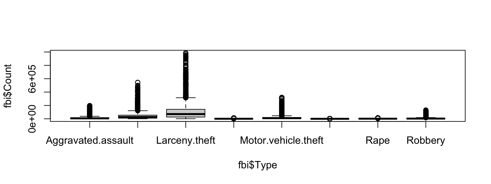

DS 202: Working with factor variables
Xiongtao Dai
Overview
- What is a factor variable
- Why is it important
- Inspecting, creating, and using factor variables
- Type casting
Factors in R
- A type of variable to indicate categories
- Stores both levels and the order of the levels. It is more than a character vector.
The fbi data
library(classdata)
str(fbi)
## 'data.frame': 23256 obs. of 7 variables:
## $ State : chr "Alabama" "Alabama" "Alabama" "Alabama" ...
## $ Abb : chr "AL" "AL" "AL" "AL" ...
## $ Year : int 1961 1962 1963 1964 1965 1966 1967 1968 1969 1970 ...
## $ Population : int 3302000 3358000 3347000 3407000 3462000 3517000 3540000 3566000 3531000 3444165 ...
## $ Type : Factor w/ 8 levels "Aggravated.assault",..: 6 6 6 6 6 6 6 6 6 6 ...
## $ Count : int 427 316 340 316 395 384 415 421 485 404 ...
## $ Violent.crime: logi TRUE TRUE TRUE TRUE TRUE TRUE ...
Using factors in R
- Many R functions behave nicely when applied on a factor, for example
boxplot(x ~ fct) creates a side-by-side boxplot of x in different groups specified by the levels in fct
- The order of factor levels affects the order of the boxes. It is crucial to arrange them in a meaningful order for presentation!
boxplot(fbi$Count ~ fbi$Type)

Working with factors
table, str inspect a factorfactor creates a new factor with specified levelslevels, levels<- extracts and set the levelsreorder(fct, numbers, FUN) reorders a factor fct according to a summary statistic FUN of numbers
Additional notes
- Often times text variables are stored in factors during input by default, e.g. by
read.csv
- Numeric variables and factors are treated differently in R, and they have to be converted manually
Reordering factor levels manually
## [1] "Aggravated.assault"
## [2] "Burglary"
## [3] "Larceny.theft"
## [4] "Legacy.rape"
## [5] "Motor.vehicle.theft"
## [6] "Murder.and.nonnegligent.Manslaughter"
## [7] "Rape"
## [8] "Robbery"
Reorder so that property crimes come first (extremely sensitive to typos):
levels(factor(fbi$Type, levels=c("Larceny.theft", "Burglary", "Motor.vehicle.theft", "Aggravated.assault", "Robbery", "Legacy.rape", "Murder.and.nonnegligent.Manslaughter", "Rape")))
## [1] "Larceny.theft"
## [2] "Burglary"
## [3] "Motor.vehicle.theft"
## [4] "Aggravated.assault"
## [5] "Robbery"
## [6] "Legacy.rape"
## [7] "Murder.and.nonnegligent.Manslaughter"
## [8] "Rape"
Reordering factor levels - using another variable
reorder(factor, numbers, function)
reorder levels in factor by values in numbers. Use function to summarize (average is used by default).
levels(reorder(fbi$Type, fbi$Count, mean, na.rm=TRUE))
## [1] "Murder.and.nonnegligent.Manslaughter"
## [2] "Legacy.rape"
## [3] "Rape"
## [4] "Robbery"
## [5] "Aggravated.assault"
## [6] "Motor.vehicle.theft"
## [7] "Burglary"
## [8] "Larceny.theft"
Missing values in numbers? make sure to use parameter na.rm=TRUE!
Changing levels’ names
## [1] "Aggravated.assault"
## [2] "Burglary"
## [3] "Larceny.theft"
## [4] "Legacy.rape"
## [5] "Motor.vehicle.theft"
## [6] "Murder.and.nonnegligent.Manslaughter"
## [7] "Rape"
## [8] "Robbery"
levels(fbi$Type)[6] <- "Murder"
levels(fbi$Type)
## [1] "Aggravated.assault" "Burglary" "Larceny.theft"
## [4] "Legacy.rape" "Motor.vehicle.theft" "Murder"
## [7] "Rape" "Robbery"
Data types: checking and casting
Checking for, and casting between types:
str, class provide info on typeis.XXX (with XXX either factor, int, numeric, logical, character, ... ) checks for specific typeas.XXX casts to specific type
Casting between types
 Note:
Note: as.numeric applied to a factor retrieves order of labels, not labels, even if those could be interpreted as numbers.
To get the labels of a factor as numbers, first cast to character and then to a number.

 Introduce a rate of the number of reported offenses by population into the
Introduce a rate of the number of reported offenses by population into the  Plot boxplots of crime rates by different types of crime. How can you make axis text legible?
Plot boxplots of crime rates by different types of crime. How can you make axis text legible?  Note:
Note: